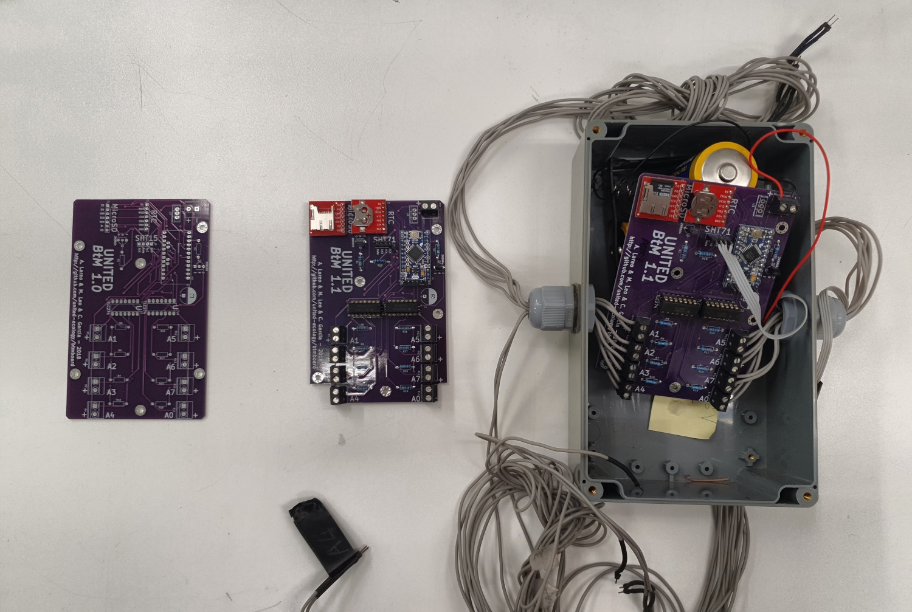
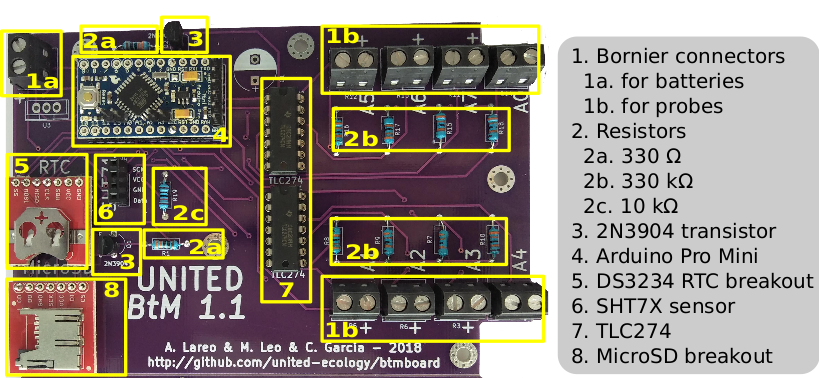
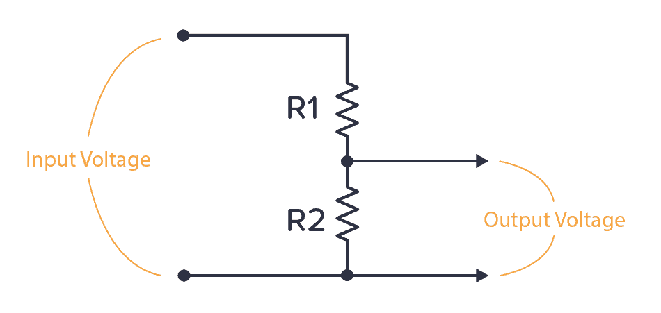

Vin = 3.3
R2 = 330
// Slider for R1 (you move this)
viewof R1 = Inputs.range([10, 1000], {
label: "Resistance R1 (Ω)",
value: 500,
step: 10
})
// Voltage output calculated from R1
Vout = +(Vin * R2*1000 / (R1*1000 + R2*1000)).toFixed(2)
// Slider for setting desired Vout — recalculates R1
viewof Vout_input = Inputs.range([0.8, Vin], {
label: "Output Voltage (Vout):",
value: Vout,
step: 0.01
})
// Computed R1 from desired Vout
R1_computed = R2 * (Vin / Vout_input - 1)Hardware details
Get the Printed Circuit Board (PCB)
- The PCB can be (depending on budget and skills)*:
- Assembled from scratch (DIY)
- Provided as a partially assembled board
* You can also get a complete one from us (+ scientific/tech support)

Key Components:

How conductance is measured:
Measures are based on Ohm’s Law. Ohm’s Law relates voltage (V), current (I), and resistance (R):
\[ V = I \cdot R \] Although measures are taken as resistance values (in \(\ohm\)), it is commonly plotted as conductance values. There is a direct inverse relation between impedance (R) and conductance (G): \[ G = \frac{1}{R} \]
Voltage Divider
A voltage divider is a simple circuit used to produce a voltage that is a fraction of the input voltage. It typically consists of two resistors in series: \(R_1\) and \(R_2\), connected across a voltage source \(V_{\text{in}}\). The output voltage \(V_{\text{out}}\) is taken from the junction of \(R_1\) and \(R_2\), relative to ground.
To measure \(R_1\) using a voltage divider:
\[ V_{\text{out}} = V_{\text{in}} \cdot \frac{R_2}{R_1 + R_2} \]
Solving for \(R_1\), you get:
\[ R_1 = R_2 \left( \frac{V_{\text{in}}}{V_{\text{out}}} - 1 \right) \]
This formula allows you to compute \(R_1\) using known values of \(V_{\text{in}}\), \(V_{\text{out}}\), and \(R_2\).

Assume:
- You know the value of \(R_2\) (in our case 330K),
- You apply a known input voltage \(V_{\text{in}}\) (in our case: 3.3V)
- You measure the output voltage \(V_{\text{out}}\) at the node between \(R_1\) and \(R_2\).
Additional Hardware (Beyond PCB)
Temperature/Humidity Sensor:
Two versions compatible with code.
Sensor covers may not be good.
Different types of clamps/pins. The results are very dependent on coupling.
SD storage
Arduino Board (serves as microcontroller)